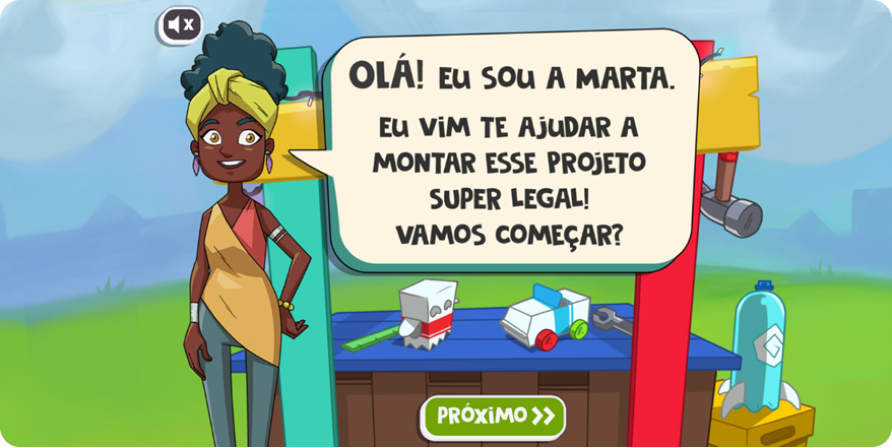
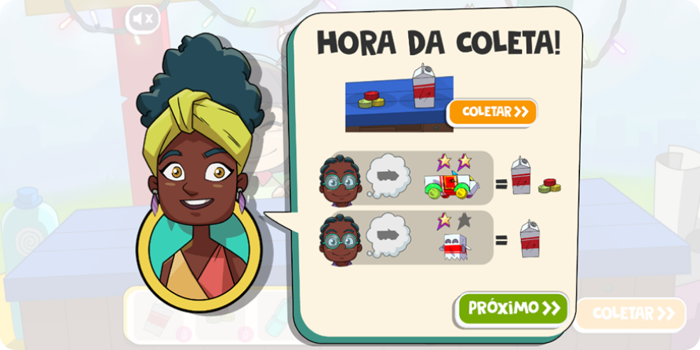
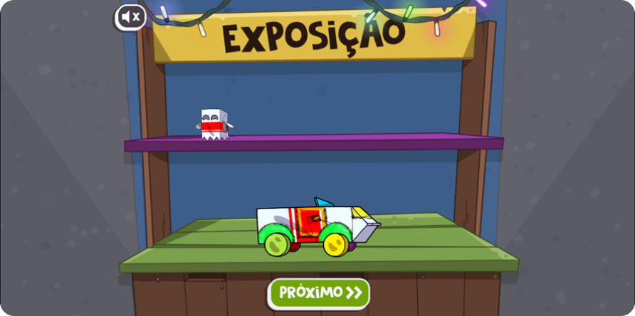
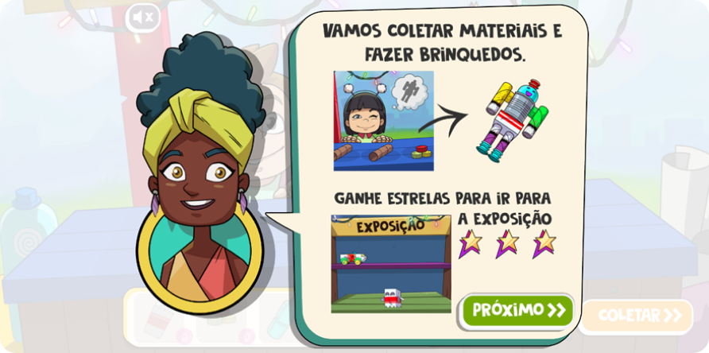
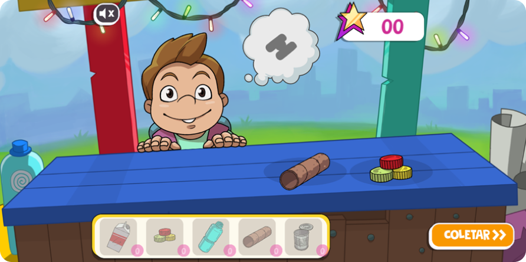
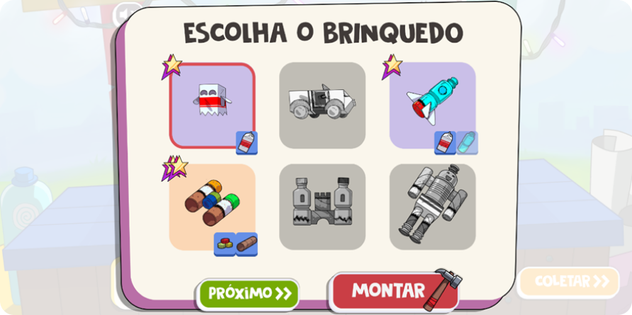
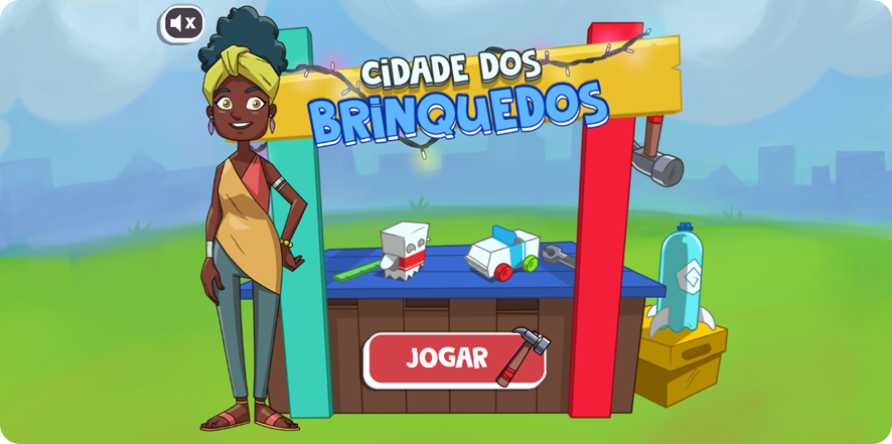

Cidade dos brinquedos
O que é o jogo Cidade dos brinquedos?
“Quer fazer com que todas as crianças da sua comunidade tenham brinquedos para brincar com você? Utilize objetos reciclados para fazer foguetes, robôs, carros e muito mais! Selecione os objetos que sobrarem e monte seus próprios brinquedos. E que tal mostrar seu talento para todo mundo? No fim do dia, apresente suas criações na grande exposição de brinquedos!” - Sebrae

Antes precisamos saber o que são jogos empresariais, segundo tantantan, os jogos garantem um melhor aprendizado e treinamento das habilidades por meio de uma metodologia de simulação que interage com situações definidas pelos participantes, saindo da teoria e, literalmente, pondo a mão na massa. Seu principal objetivo é proporcionar ao jogador um laboratório para testar seus conhecimentos e competências na prática, agregando novas perspectivas.
Pontos positivos
Criatividade nas possibilidades de elaboração de brinquedos, não apresentando um clichê do que pode ser produzido com material reciclável e dos materiais a serem usados em sua composição, consequentemente.
Pontos negativos
Ausência de instruções claras e objetivas
Para o norteamento do jogador, com detalhamentos simples e nítidos (por conta disso, o jogo não é intuitivo).
 Falta de sensação de recompensa
Na área de exposições, não há uma recompensa palpável que justifique a atividade do jogador, causando uma sensação de monotonia/tédio/desinteresse, visto que não há nenhuma informação acerca da área expositiva ou de como proceder a partir daí.
Falta de sensação de avanço
O jogo transmite a visão de um looping em relação ao proceder de suas ações (sem fases);
Falta de sensação de erro
O jogo não estabelece uma margem de erros, haja vista que não permite a ação de raciocínio e criticidade a respeito das etapas da criação (pré-estabelecido);
 Falta de UI/UX
Não possui um menu como forma de somar na experiência do usuário;
